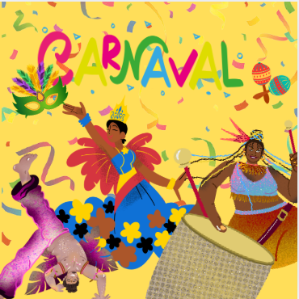

A cultura afro-brasileira é um conjunto de manifestações culturais que se originam da contribuição dos africanos e afrodescendentes para a formação social, econômica, política e cultural do Brasil.
Política

A Lei 10.639/2003 tornou obrigatório o ensino da história e cultura afro-brasileira nas escolas, reconhecendo a importância de educar sobre essas contribuições para combater o racismo e promover a diversidade cultural.
Cultura e religião
O Carnaval no Brasil foi influenciado por diversas culturas, como a europeia (entrudo), mas está, em sua maioria, ligado à cultura africana (com referências ao candomblé e à umbanda).
Hoje se tornou um festejo associado à cultura afro-brasileira.
Culinária
Boa parte da culinária brasileira é de origem afrodescendente. Com a chegada dos africanos ao Brasil, eles precisavam adaptar suas receitas com ingredientes locais.
Com o tempo, suas técnicas se uniram aos condimentos e saberes indígenas.
Exemplo é o famoso acarajé.